Prior labs show examples where agents leverage built-in tools or custom-built tools provided by the application writer. As shown below, each LLM application would then execute its own code for accessing services.
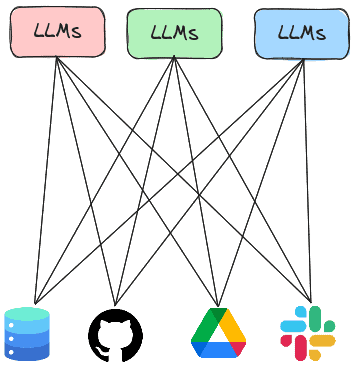
The Model Context Protocol or MCP is a standard protocol for LLMs to retrieve invoke both local and remote tools to access services. Thus, rather than having every LLM agent implement all of the tools it needs to execute, the agent can instead invoke tools implemented by MCP servers that are running either locally or remotely. In this lab, you will experiment with agents that utilize MCP servers to handle tasks.
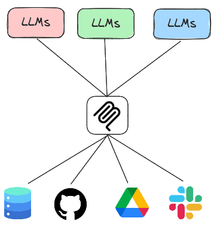
Within the repository on the course Kali VM, change into the exercise directory and update the code.
cd gensec-class/04_MCP git pull
Within the repository on the course VM, change into the exercise directory, then create a virtual environment and install the required packages.
cd 01_sqlite uv init --bare uv add -r requirements.txt
There are two main ways of running an MCP server. One way is to run the MCP server locally and communicate with it over standard input/output (STDIO) while another is to run the MCP server remotely and communicate with it over HTTP.
The code below implements the SQLite server. It utilizes the FastMCP package to create the server and instantiates one tool within it called query(). The tool handles queries to a local SQLite database by taking a query string and executing it against a specified database, returning the results. By taking a raw query string, the tool is vulnerable to SQL injection attacks. Note that the description of the tool is provided within the comments of the tool declaration. This description is utilized by the server to instruct clients on how to access the tool. An LLM agent is better equipped to call MCP tools if these descriptions are detailed, specific, and accurate.
from fastmcp import FastMCP
import sqlite3
import sys
mcp = FastMCP("sqlite")
con = sqlite3.connect('db_data/metactf_users.db')
@mcp.tool()
async def query(query: str) -> list:
"""Query a specified Sqlite3 database. Takes a query string as an input parameter and returns the result of the query."""
cur = con.cursor()
res = cur.execute(query)
con.commit()
return res.fetchall()
if __name__ == "__main__":
if sys.argv[1] == 'stdio':
mcp.run(transport="stdio")
else:
mcp.run(transport="http", host="0.0.0.0", port=8080)To leverage the tool that the server now supports, we can adapt our prior agent code to be an MCP client, leveraging LangChain's MCP adapter support to invoke the tool on the server. As the code shows, we first define the server we wish to bring up. In this instance, the path in the repository to the prior server code is specified. Then, in the agent loop, we create a connection to the MCP server and load the MCP server's tool into our agent, before querying it. In doing so, the agent will package an MCP call over STDIO via the session's connection and retrieve the results.
from langchain_mcp_adapters.tools import load_mcp_tools
from mcp import ClientSession
from mcp.client.stdio import StdioServerParameters, stdio_client
import asyncio
database = "db_data/metactf_users.db"
server = StdioServerParameters(
command="python",
args=["vulnerable_sqlite_mcp_server_stdio.py","stdio"]
)
prompt = f"You are a Sqlite3 database look up tool. Perform queries on the database at {database} given the user's input. Utilize the user input verbatim when sending the query to the database and print the query that was sent to the database"
async def run_agent():
async with stdio_client(server) as (read, write):
async with ClientSession(read, write) as session:
await session.initialize()
tools = await load_mcp_tools(session)
agent = create_react_agent(model=llm, tools=tools, prompt=prompt)
query = "Who are the users in the database?"
result = await agent.ainvoke({"messages": [("user", query)]})
print(f"Agent response: {result}")
if __name__ == "__main__":
result = asyncio.run(run_agent())Before we use the agent to answer queries about the database, we'll want to establish 'ground-truth' to ensure the agent is working correctly and not hallucinating incorrect results. Within the repository, load the database using the sqlite3 CLI.
cd db_data sqlite3 metactf_users.db
Using the CLI, query the database to determine "ground-truth" measurements.
The following queries return the column names of the users table, the number of users in the users table, the usernames that start with the letter 'a', and the admin's password hash that includes the number of iterations the hash was generated with.
PRAGMA table_info(users); SELECT COUNT(*) from users; SELECT username FROM users WHERE username LIKE 'a%'; SELECT passhash FROM users WHERE username = 'admin';
Once you've obtained ground truth, go back to the program directory and run the program
uv run 01_stdio_mcp_client.py
Now, attempt to interact with the database using the agent with natural language queries asking for similar information.
While the first two queries are often easy for an LLM to produce the SQL for, it may find other open-ended queries difficult unless prompted for a more specific set of steps. For the queries that fail, attempt to modify the query to ask the LLM to 'think step-by-step' (e.g. chain-of-thought prompting) or specifically break down the steps that it would need to perform to answer the query.
Finally, try a complex query with step-by-step instructions such as the one below which returns a hashcat command that performs a dictionary search on the admin's password hash.
Modify the query or the model until the agent is able to return a correct answer to the query.
It is quite dangerous to expose an MCP server like this without proper access control. It is also quite dangerous to simply allow agents to have an MCP server accept arbitrary SQL queries from an agent. Using the agent, show whether the server is vulnerable to attack using the queries below.
foo or 1=1--For each query
Exit out of the agent with a blank line. Note, if the agent is able to delete the table, restore it from the command line via:
git checkout db_data/metactf_users.db
The vulnerable SQLite MCP server allowed arbitrary SQL queries to be executed, giving it excessive agency and making it extremely vulnerable to attack. One can improve the security of the MCP server by limiting the functionality of its tools to just the ones necessary. A more secure version is shown below:
@mcp.tool()
async def fetch_users() -> list:
"""Fetch the users in the database. Takes no arguments and returns a list of users."""
cur = con.cursor()
res = cur.execute('SELECT username from USERS')
return res.fetchall()
@mcp.tool()
async def fetch_users_pass(username: str) -> str:
"""Useful when you want to fetch a password hash for a particular user. Takes a username as a string argument. Returns a JSON string"""
cur = con.cursor()
res = cur.execute(f"SELECT passhash FROM users WHERE username = ?;",(username,))As the code shows, the MCP server only allows one to fetch a list of all of the users and to retrieve the password hash for a given user. To leverage this server, modify the MCP client to utilize the secure server.
server = StdioServerParameters(
command="python",
args=["secure_sqlite_mcp_server.py","stdio"]
)Run the program again and repeat the destructive queries:
foo or 1=1--For each query
One can also run an MCP server remotely over the network, thus allowing MCP clients to invoke the tools that the server implements over the network using HTTP. In this step, we'll first deploy the SQLite MCP server as a serverless container running on Google's Cloud Run, then configure our client agent to invoke it using HTTP.
Bring up Cloud Shell on your project. We will first need to enable all of the APIs required for launching a container on Cloud Run. We will run them in batches to avoid rate-limiting. If a command fails, repeat it.
gcloud services enable run.googleapis.com cloudbuild.googleapis.com artifactregistry.googleapis.com
gcloud services enable iamcredentials.googleapis.com serviceusage.googleapis.com
gcloud services enable logging.googleapis.com monitoring.googleapis.com Visit the course repository on GitHub and navigate to the directory containing the SQLite MCP code. Examine the Dockerfile in the directory.
FROM python:3.10 WORKDIR /app COPY requirements.txt . RUN pip install --no-cache-dir -r requirements.txt RUN mkdir -p db_data COPY secure_sqlite_mcp_server.py . COPY ./db_data/metactf_users.db ./db_data/metactf_users.db EXPOSE 8080 CMD ["python", "vulnerable_sqlite_mcp_server.py", "http"]
The Dockerfile specifies a container image that implements our MCP server. The container installs the Python packages required to run the server, then copies the server code and database file over, before running the server. Note that the container exposes only port 8080. By default, CloudRun routes all incoming requests to port 80 and 443 to port 8080 when a container is deployed unless specifically requested to do otherwise.
Deploy the container onto Cloud Run. While one could go through the mechanics of building the container and deploying it via the CLI, for convenience, you can visit the course's repository on Github, navigate to the directory with the Dockerfile, and then click on the "Run on Google Cloud" button.
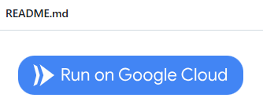
This will launch the process within Cloud Shell to build the container from the Dockerfile in the repository and to deploy it onto Cloud Run. As part of this process, you'll need to.
us-central1)The container will then be built and pushed to Google's Artifact Registry and then deployed onto Cloud Run. When deployed, a URL will be returned. Make a note of it.
If the build fails, you may try to run the commands manually in Cloud Shell
git clone https://github.com/icardei/gensec-code
cd gensec-class/04_MCP/01_sqlite
gcloud artifacts repositories create cloud-run-source-deploy \
--repository-format=docker \
--location=us-west1 \
--description="Docker repository for Cloud Run"
gcloud builds submit --tag us-west1-docker.pkg.dev/${GOOGLE_CLOUD_PROJECT}/cloud-run-source-deploy/svc-01-sqlite .
gcloud run deploy svc-01-sqlite --project=${GOOGLE_CLOUD_PROJECT} \
--platform=managed --region=us-west1 --allow-authenticated \
--image us-west1-docker.pkg.dev/${GOOGLE_CLOUD_PROJECT}/cloud-run-source-deploy/svc-01-sqlite Visit the Cloud Run interface via the web console.
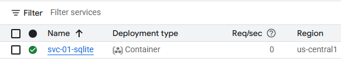
We'll now run the MCP client on the course VM and allow it to utilize the MCP server running in Cloud Run. To begin with, on the course VM, set the MCP_URL environment variable to the URL that is returned by Cloud Run.
export MCP_URL="https:// ...a.run.app"
To adapt the MCP client to utilize the remote MCP server, we simply tweak the client to utilize the Streamable HTTP interface to the MCP server's endpoint URL as shown in the snippet below, keeping the rest of the client the same.
async def run_agent():
async with streamablehttp_client(f"{os.getenv('MCP_URL')}/mcp/") as (read, write, _):
async with ClientSession(read, write) as session:
await session.initialize()
tools = await load_mcp_tools(session)
...Run the agent and interact with the MCP server on Cloud Run.
uv run 02_http_mcp_client.py
Repeat the destructive queries again:
foo or 1=1--Then, run the initial queries to show the attacks did not impact the server.
Back in the web interface for Cloud Run, click on the deployed service and then navigate to the logs. Find the requests associated with your queries.
In Cloud Shell, list the SQLite MCP Cloud Run service that was deployed, then delete it.
gcloud run services list gcloud run services delete <SERVICE_NAME> --region=<REGION>
While we can utilize LangChain's MCP adapter support to invoke tools provided using MCP, another agent implementation that can be used is FastAgent. FastAgent is designed specifically for MCP tool calls and their results. The agent is simple to set up and can be easily integrated with MCP servers being spun up locally or over the network. To begin with, FastAgent needs to be configured with the name and functionality of the MCP servers it is allowed to access. The configuration for utilizing the prior SQLite STDIO MCP server is shown below. A FastAgent client will automatically load this configuration to initialize its tools.
mcp:
servers:
sqlite_stdio:
command: "python"
args: ["secure_sqlite_mcp_server.py","stdio"]A simple FastAgent program is shown below that utilizes this MCP server to answer queries.
import asyncio
from fast_agent.core.fastagent import FastAgent
# Create the application
fast = FastAgent("SQLite Agent")
@fast.agent(
instruction=f"You are a Sqlite3 database look up tool. Perform queries on the database given the user's input. Utilize the user input verbatim when sending the query to the database and print the query that was sent to the database",
model="...", # See https://fast-agent.ai/models/llm_providers
servers=["sqlite_stdio"],
use_history=True,
)
async def main():
async with fast.run() as agent:
await agent.interactive()Run the agent and interact with the interactive interface implemented by the FastAgent package.
uv run 03_fastagent_mcp_client.py
After the FastAgent interface loads, list the MCP servers and the tools that have been loaded.
/mcp /tools
Run the query below:
As before, the agent should send a query string to the MCP server that returns the name of the table in the database. After the answer is returned, view the agent history.
/history
View the number of input and output tokens consumed in the agent's execution.
/usage
Being mindful of your token consumption when building an agent will help reduce overall costs.
Now you will interact with a Google Drive agent that uses an MCP server to interact with your Google Drive. The code for the Google Drive MCP server is similar to the prior SQLite one with specific tools implementing individual operations within a user's Google Drive. Code snippets for listing files (list_files) and retrieving a particular file (get_file) are shown below.
from fastmcp import FastMCP
mcp = FastMCP("Google Drive")
@mcp.tool("list_files")
async def list_files():
"""
List files in Google Drive.
"""
service = get_drive_service()
results = service.files().list(pageSize=10, fields="nextPageToken, files(id, name)").execute()
items = results.get('files', [])
file_list = [f"{item['name']} (ID: {item['id']})" for item in items]
return "\n".join(file_list)
@mcp.tool("get_file")
async def get_file(file_id: str):
"""
Get a file from Google Drive by its ID.
"""
service = get_drive_service()
file = service.files().get(fileId=file_id, fields='id, name').execute()
return f"File found: {file['name']} (ID: {file['id']})"As both tools show, the service is instantiated and then specific APIs are invoked on it utilizing the parameters given by the client.
Cloud shell
We'll now set up our project to run the server. Begin by enabling the Google Drive API on your cloud project. Within Cloud Shell, this can be done with the following:
gcloud services enable drive.googleapis.com
We'll be running the MCP server on our course VM and connecting to it from an MCP client running on Cloud Shell. To allow the server to run on the course VM, we'll need to open up the firewall to allow incoming traffic to the server from our client. Within Cloud Shell, create the firewall rule with tag mcp and add it to the course VM.
gcloud compute firewall-rules create allow-mcp \ --allow=tcp:8080 --target-tags=mcp gcloud compute instances add-tags <NameOfVM> \ --tags=mcp
OAuth Setup
Google Drive utilizes the OAuth2 protocol to authenticate and authorize access. To enable the MCP server to do so, we must configure an OAuth application on our Google Cloud project. To do so, navigate to the OAuth consent section of the "APIs & Services" here.
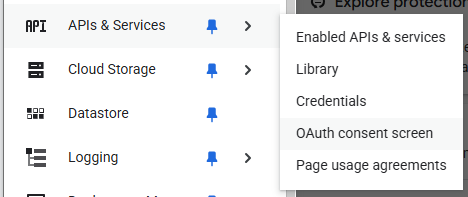
If this is the first time OAuth is being configured, you will be asked to specify application information. Name the application "Google Drive MCP" and utilize your fau.edu address.
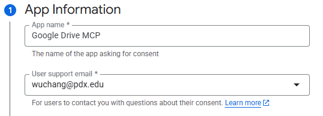
Configure the Audience to "Internal" and set the contact information to your fau.edu address. Agree to the user data policy and create the project configuration. Navigate to the "Data Access" portion of the console shown below and click on "Add or remove scopes"
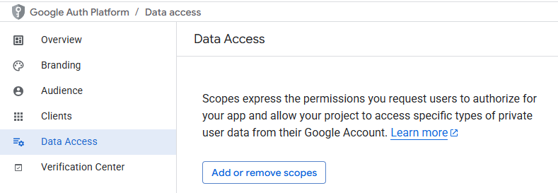
Select the permissions to allow full access to your Google Drive files and click on "Update".
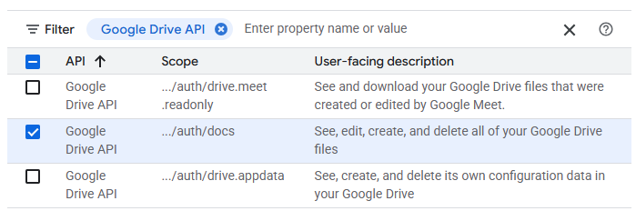
Next, navigate to the Clients tab and create a client.
Configure it as a "Desktop application" and name it "MCP client". When the client has been created, download its associated JSON file that will include its Client ID and secret.
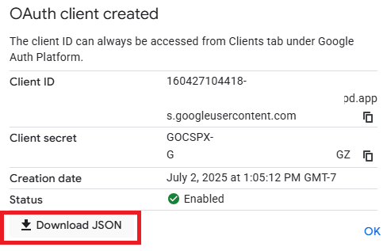
Upload the JSON file to Cloud Shell.
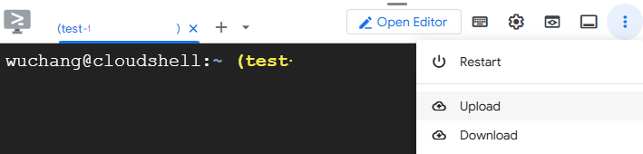
Then, upload it from Cloud Shell to your course Kali VM with the following command that also renames it to
credentials.json.
gcloud compute scp client_secret_*.json kali-vm:/home/${USER}/gensec-code/04_MCP/02_google_drive/credentials.json
The course VM (kali-vm)will be used to run the MCP server. For this step, we need to get Google Drive credentials for your user account onto the VM in order to allow the MCP server to interact with files in your Google Drive folders. Connect to your course VM using RDP (e.g. Remote Desktop Connection or Remmina). Change into the exercise's directory and then set up the Python environment for the server.
cd 02_google_drive uv init --bare uv add -r requirements.txt
Run the authentication script in the directory to obtain credentials for your Google account that the MCP server will then utilize when accessing Google Drive on your behalf.
uv run auth.py
Click the URL that it prints out to launch a web browser that will allow you to authenticate and authorize Google Drive permissions via OAuth. If everything worked then you should see a list of some of your Google Drive files in the output of the authentication script.
Examine the Google Drive MCP server code in gdrive_mcp_server.py and make a note of each tool that it provides to clients. Then, launch the Google Drive MCP server and keep it running.
uv run gdrive_mcp_server.py
Launch Google Cloud shell. Clone the course repository, then change into the exercise directory and set up a Python virtual environment.
git clone https://github.com/icardei/gensec-code cd gensec-class/04_MCP/02_google_drive uv init --bare uv add -r requirements.txt
Now copy the external IP address of your course VM and set the MCP_URL environment variable as done previously, replacing "CourseVM_External_IP" with your course VM's external IP address. Then run the agent and it will connect to the MCP server.
export MCP_URL="http://<CourseVM_External_IP>:8080" uv run gdrive_mcp_client.py
Select 2 different tools that the Google Drive MCP server implements and prompt the client to perform an operation that invokes it.
Exit the client and remove your environment.
rm -rf .venv
Ctrl+c to exit the server and remove your environment.
rm -rf .venv
Change into the exercise directory.
cd 03_git uv init --bare uv add -r requirements.txt
The Git MCP server (mcp-server-git) is a Python package that supplies an off the shelf MCP server provided by Anthropic that allows you to query git repositories. After including it in our packages and installing it in our Python environment, we can specify the server in the FastAgent configuration as shown below:
This file looks like this (with some specific version constraints):
fastmcp
requests
mcp-server-git
fast-agent-mcp
mcpmcp:
servers:
git:
command: "uv"
args: ["run", "python3","-m", "mcp_server_git"]Install the packages
uv init --bare uv add -r requirements.txt
Then, run the program. This command includes specific version constraints because of library dependencies. If this command fails, try running it without the version constraints.
uv run --isolated --no-project --with "fast-agent-mcp==0.9.30" --with "mcp==1.28.1" \
python git_mcp_client.py -v
Prompt the agent to find the hash of the last commit and to list the developers responsible for the last 20 commits.
Exit the client and remove the environment.
rm -rf .venv
While MCP gives agents access to powerful tools and services, tool access alone does not capture the expertise required to solve complex tasks consistently and effectively. Agent Skills address this gap by defining *how* an agent performs a task. A skill packages reusable expertise—including prompts, workflows, reasoning strategies, validation rules, and domain-specific best practices—into a modular capability that can be invoked whenever needed. Rather than simply exposing functionality, skills encode proven methods for accomplishing objectives such as code review, curriculum generation, security analysis, or software design. Together, MCP provides the capabilities an agent can invoke, while Agent Skills determine how those capabilities are orchestrated to produce reliable, repeatable results.
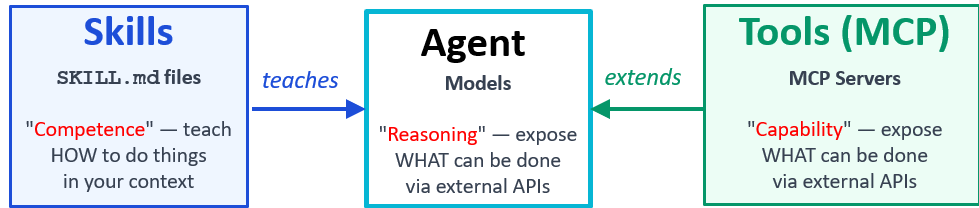
In this exercise, we will examine a simple agent skill that allows an agent to answer questions about Portland State's Department of Computer Science. Begin by changing into the exercise directory.
cd 04_pdx_cs_curl_skill
To configure the skill, we specify its name, description, and workflow in a skill file as shown below:
---
name: pdx-cs-curl
description: Use to answer questions about Portland State University CS department.
---
# PDX CS Curl
Use this skill for questions about the Portland State University computer science department when the answer should come from `https://web.cs.pdx.edu`.
## Local Script
Run this command from the directory that contains `skills/`:
```bash
python skills/pdx-cs-curl/scripts/pdx_cs_curl.py [relative-path]
```
- Omit `relative-path` to fetch the homepage.
- Pass a path relative to `https://web.cs.pdx.edu`, such as `faculty/` or `courses/`.
## Workflow
1. Identify the most relevant PSU CS page path.
2. Fetch that page with the script.
3. If the page links to a better source, fetch that page too.
4. Answer only from the retrieved PSU CS content.
5. If the site content does not contain the answer, say so clearly.
## Report Back
- The requested fact or summary.
- The page path used as evidence.
- Any relevant caveats if the site content is incomplete or ambiguous.The skill executes a local script that retrieves content from the department's website. It's important that the script that is executed does not contain vulnerable code and can resist prompt injection attacks. To do so, the script implements input validation to ensure that all accesses are to the server indicated via the base URL of https://web.cs.pdx.edu as shown in the script source below:
BASE_URL = "https://web.cs.pdx.edu/"
parsed = urlparse(relative_path)
if parsed.scheme or parsed.netloc:
print("relative-path must not be an absolute URL", file=sys.stderr)
return 2
relative_path = parsed.path.lstrip("/")
if any(part == ".." for part in relative_path.split("/")):
print("relative-path must not contain '..' segments", file=sys.stderr)
return 2
url = urljoin(BASE_URL, relative_path)
result = subprocess.run(
["curl", "--silent", "--show-error", "--fail", "--location", url],
capture_output=True,
text=True,
)To test the skill, create a Python environment and install the packages.
uv init --bare uv add -r requirements.txt
Finally, run the program.
uv run pdx_cs_curl_client.py
Prompt the agent for information about the Cybersecurity certificate
Exit the client and remove the environment.
rm -rf .venv